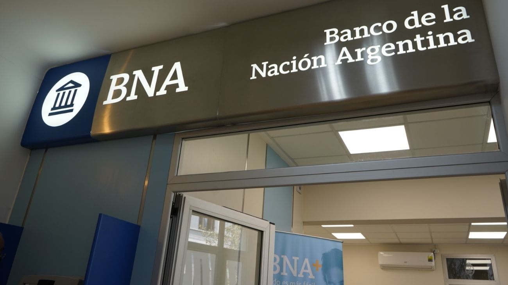

El Banco Nación lanza Títulos de Deuda en el mercado tras más de 30 años
La entidad abre una licitación con tres instrumentos de deuda diseñados para ahorristas minoristas e inversores institucionales, con el objetivo de fortalecer el crédito en la economía real.

El Banco de la Nación Argentina lanzó una emisión de títulos de deuda propia con tres instrumentos en distintas monedas, en una operación que abre el martes 6 de mayo y cierra el miércoles 7, con liquidación de fondos prevista para el 11 de mayo. La propuesta está diseñada tanto para personas físicas como jurídicas, sean o no clientes del banco, y apunta a diversificar el fondeo de la institución mientras ofrece al ahorrista minorista una nueva alternativa frente al plazo fijo tradicional, el plazo fijo UVA y los fondos comunes de inversión. Los colocadores participantes son Santander, Galicia, BBVA, Macro Securities y Nación Bursátil.
La colocación contempla tres títulos diferenciados por moneda y perfil de riesgo. Un título en pesos, un título en dólares y un tercero en UVA, cada uno con condiciones de tasa y plazo propias que serán definidas en función de la demanda recibida en la licitación. El monto máximo de suscripción inicial fue fijado en US$50 millones en conjunto para los tres instrumentos, pero el banco se reserva la posibilidad de ampliarlo hasta US$1.500 millones según la calidad y el volumen de las ofertas. Esta posibilidad de ampliación es habitual en operaciones de este tipo y será decidida por el emisor en coordinación con los colocadores al cierre de la licitación.
Para acceder, los clientes del Banco Nación pueden operar directamente desde su banca digital sin trámite adicional. Quienes no sean clientes deberán descargar la aplicación BNA+ para participar. Un punto a favor para el pequeño ahorrista: los clientes de los bancos colocadores —Santander, Galicia, BBVA y Macro— que ya cuenten con cuenta comitente en esas entidades pueden suscribir los títulos desde sus propios bancos, sin necesidad de abrir una cuenta en el Nación. Las cuentas comitentes y cajas de ahorro en dólares necesarias se abrirán automáticamente durante el proceso de solicitud y no tendrán costo de mantenimiento.
Según el comunicado oficial del banco, los fondos recaudados se destinarán directamente a fortalecer el crédito en la economía real: más financiamiento para pymes, más créditos hipotecarios para familias y más préstamos para productores agropecuarios. La operación representa además un paso hacia una gestión más moderna y transparente para la institución, en línea con las prácticas del mercado privado. Para el inversor minorista, estos nuevos títulos ofrecen el respaldo de la entidad bancaria más grande del país como emisor, una combinación que los posiciona como una alternativa concreta en el menú de inversiones disponibles en pesos y dólares.